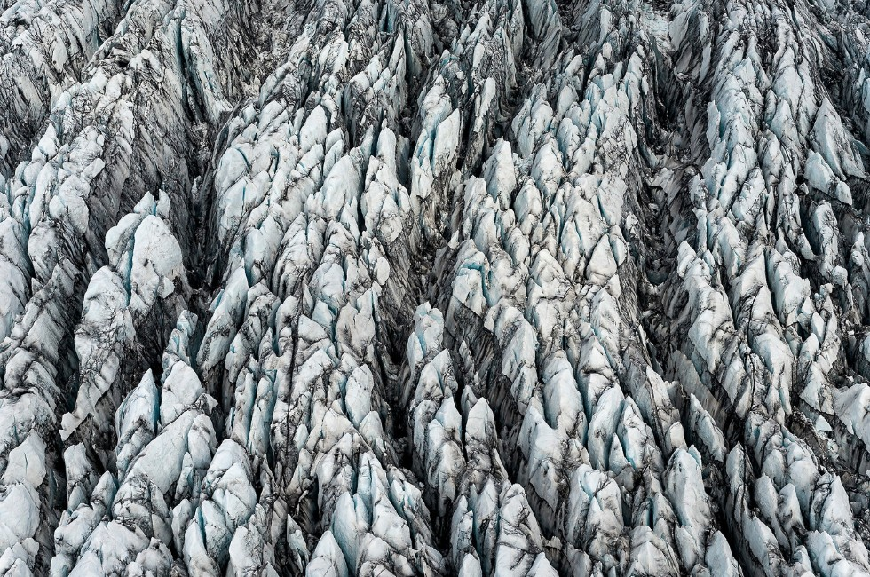
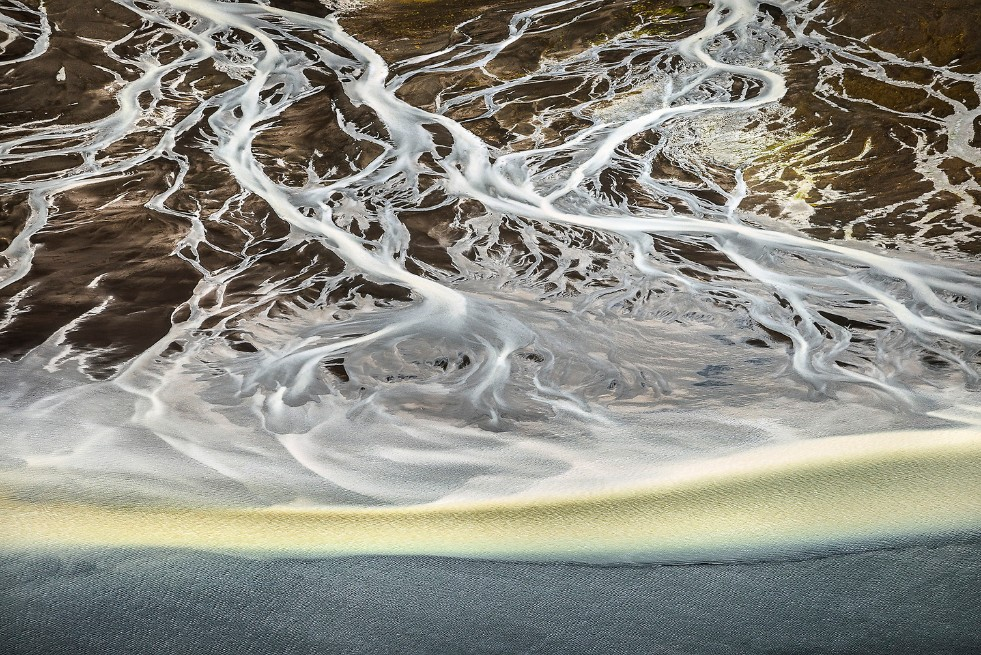

Iceland
|  | Escamas de la naturaleza |
| En el sureste de Islandia, se encuentra este glaciar que se le ha llamado Breiðamerkurjökull que se asemeja bastante a las escamas de un dragón gigante. Los glaciares en Islandia están retrocediendo rápidamente debido al calentamiento global y este glaciar no es la excepción | |
| Etiquetas: #2014 #Glaciar #Islandia #Aérea |
|
Transporte de glaciares | |
| Este es el rio Ytri-Rangá, este rio transporta grandes bloques de hielo que se desprenden del glaciar hasta el océano Atlántico. | ||
| Etiquetas: #2014 #Glaciar #Rio #Atlántico #Aérea | ||
 |
Rio Thjorsa | |
| Imagen del rio Thjorsa que lo vuelve una imagen de lo mas bonita, y con un ligero toque a misterio por la neblina que lo rodea | ||
| Etiquetas: #2014 #Rio | ||
|  | De rio a Oceano | |
| Fotografía del derretimiento de un glaciar que genera un paso de agua hasta la costa, creando una imagen hermosa tanto del rio, y de como desemboca en el océano Atlántico | ||
| Etiquetas: #SelvaAmazonica #Aérea #Brasil #Deforestacion | ||
 |
Restos de un glaciar | |
| Este es el glaciar Vatnajökull, pero no es el glaciar en si, sino los restos que quedan de él después de que se haya derretido debido al calentamiento global | ||
| Etiquetas: #2014 #Glaciar #Derretimiento #Aérea | ||